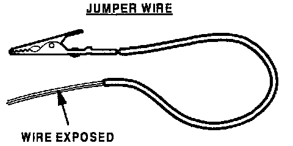
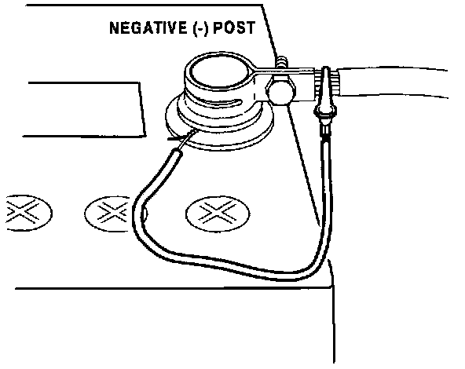
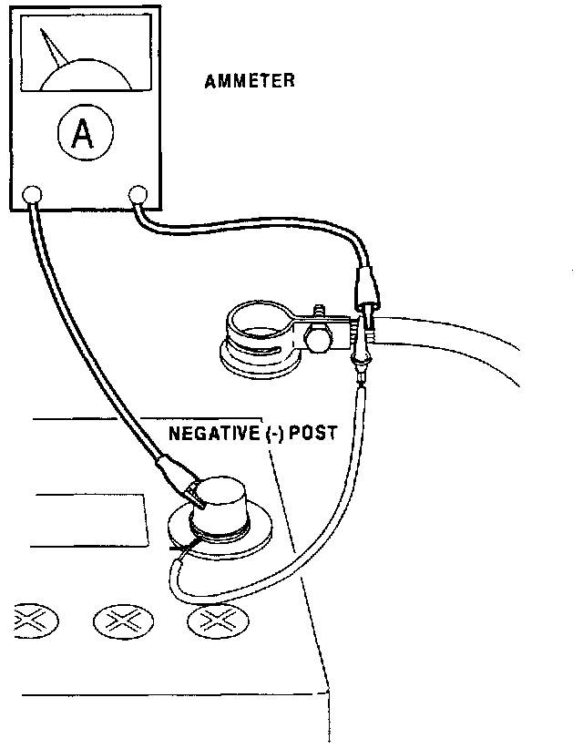
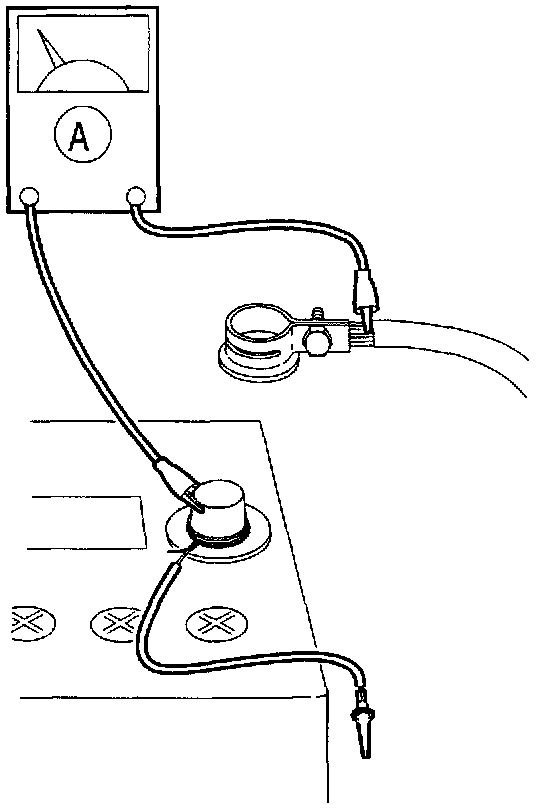

Battery - Dies In A relatively Short Period Of Time
Bulletin No. 001/98Issued 10/22/98
Revised
Category
G (01)
Applicable Model/s
All Models except B-Series & Nav.
Subject
DEAD BATTERY (INSPECTING FOR BACK-UP CURRENT)
APPLICABLE MODEL(S)/VINS
All models except B-Series and Navajo.
DESCRIPTION
Battery is dead after vehicle sits overnight or for a short period of time. This could be caused by excessive back-up current drawn through the battery after the engine is shut off.
Note
^ Back-up current is defined as the current that flows to the memory circuits (i.e. radio, PCM) while the key is out of the ignition and doors are closed with all lights turned off.
Customers complaining of this concern should have their vehicle repaired using the following procedure.
REPAIR PROCEDURE
1. Verify customer complaint.
2. Turn oft all electrical loads (including accessories), remove key from ignition, and close all doors.
Note
^ Disable hood light (if equipped).

3. To avoid deleting the audio memory presets or OBD-II fault memory, prepare a jumper wire as shown.
4. Carefully loosen the negative battery clamp without disconnecting it from the post.

5. Slightly lift clamp and wrap the jumper wire around the bottom of the post and attach the alligator clip to the cable clamp.

6. Remove the clamp from post then connect an ammeter as shown.
Note
^ Be sure ammeter fuse is good. If fuse is blown, it will create an open circuit which will defeat the purpose of this procedure.

7. Remove the alligator clip from the cable clamp and measure the back-up current.
Specification
20mA (0.020A)
^ It is necessary to wait a minimum of one (1) minute after removing the key from the ignition and closing all doors before measuring back-up current. This is the time necessary for dome lights and CPU's to shut down and back-up current to achieve specification.
If back-up current exceeds specification, a short exists or a defective component is causing excessive current flow.
Locate the source of excessive current draw and repair as necessary. Then proceed to STEP 8.
If the current draw is within specification, refer to Workshop Manual for diagnostics.
8. Verify repair.